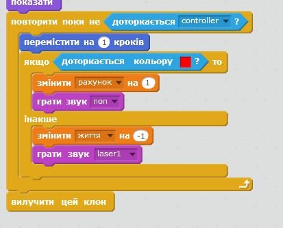
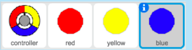

При реалізації цього проекту, ви навчитеся створювати гру, в якій потрібно буде ловити кольорові кульки стороною контролера-колеса такого ж кольору.
Крок 1: Створення контролера
Розпочнемо зі створення контролера-колеса, яке ми використовуватимемо для збору точок.
Завдання для виконання
Створіть новий проект у Скретч та видаліть спрайт кота, так щоб проект став пустим.
Збережыть цей малюнок та додайте його до сцени.
screenshot
Повертаємо наше колесо праворуч, коли натиснуто клавішу "стрілка вправо":
screenshot
Протестуйте колесо — воно має обертатися праворуч.
Збережіть свій проект
Виклик: Крутимось ліворуч
Зробіть так, щоб колесо оберталось ліворуч, якщо натиснута клавіша "стрілка вліво".
Збережіть свій проект
Крок 2: Ловимо точки
Тепер додамо декілька точок, які гравець ловитиме за допомогою контролера-колеса.
Завдання для виконання
Створіть новий спрайт із назвою "червона кулька". Вона має виглядати як маленька червона крапка.
screenshot
Додайте цей скрипт до "червоної" кульки, щоб кожні кілька секунд створювався її новий клон:
screenshot
Коли клон створений, ми хочемо, щоб він з'явився в одному з 4-х кутів сцени.
screenshot
Для цього спочатку створіть змінну-список "початкова позиція", і натисніть "(+)", щоб додати значення "-180" та "180"
screenshot
Ці два елементи списку можна використати для вибору випадкового кута сцени. Додайте цей код до спрайту "кульки", і тепер кожен новий клон буде з'являтися в випадковій стороні, а потім повільно рухатися до контролера.
screenshot
Вище код вибирає -180 або 180 для x і y позицї, це означає, що кожної клоном починається в одному кутку сцени.
Перевірте свою гру. На сцені повинні з'являтися червоні кульки в різних кутах сцени, і повільно рухатись до центру, до нашого контролера.
screenshot
Створіть 2 нові змінні: "життя"" і "рахунок".
Додайте до сцени код, який надасть блоку <0>життя {.blockdata} значення 3 і блоку <0>рахунок {.blockdata} значення 0 на початку гри.
Потрібно додати код після червоної крапки блоку <0> запускається як клон {.blockcontrol}, для того, щоб гравець отримав 1 до <0>рахунку {.blockdata}, у випадку співпадіння кольорів, або в гравця віднімалось 1 <0>життя {.blockdata}, якщо кольори не співпадають.

screenshot
Додайте наступний код в кінці скрипта сцени, для того щоб гра закінчувалась, коли гравець втрачає всі життя:
screenshot
Перевірте свою гру, щоб переконатися, що код працює належним чином.
Збережіть свій проект
Виклик: Ще більше кульок
Продублюйте спрайт "червона" крапка двічі і назвіть два нових спрайти "жовтий" і "блакитний".

screenshot
Відредагуйте ці спрайти (включаючи їх код), так щоб кожна кольорова крапка відповідала правильному кольору на контролері. Не забудьте протестувати проект, переконавшись, що ви набирали бали і втрачали життя у визначений час, і що ваша гра не занадто легка, або занадто складна!